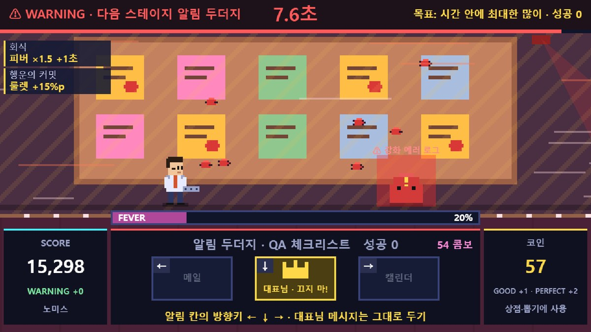
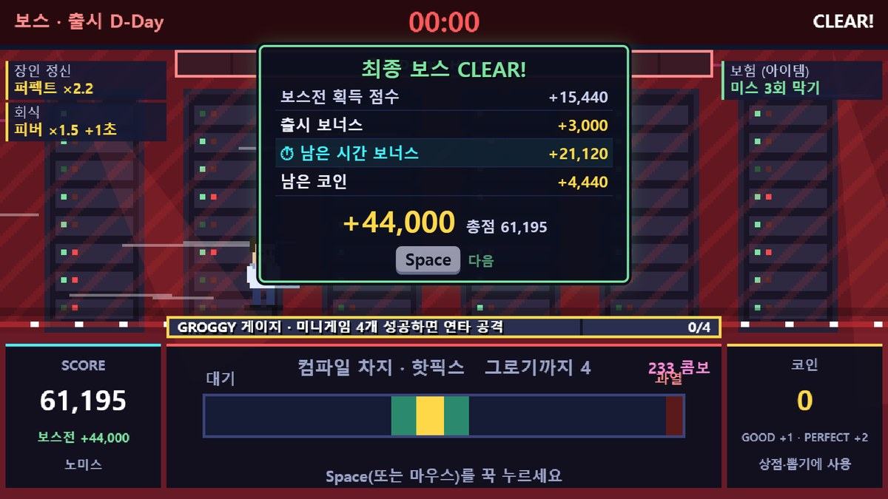
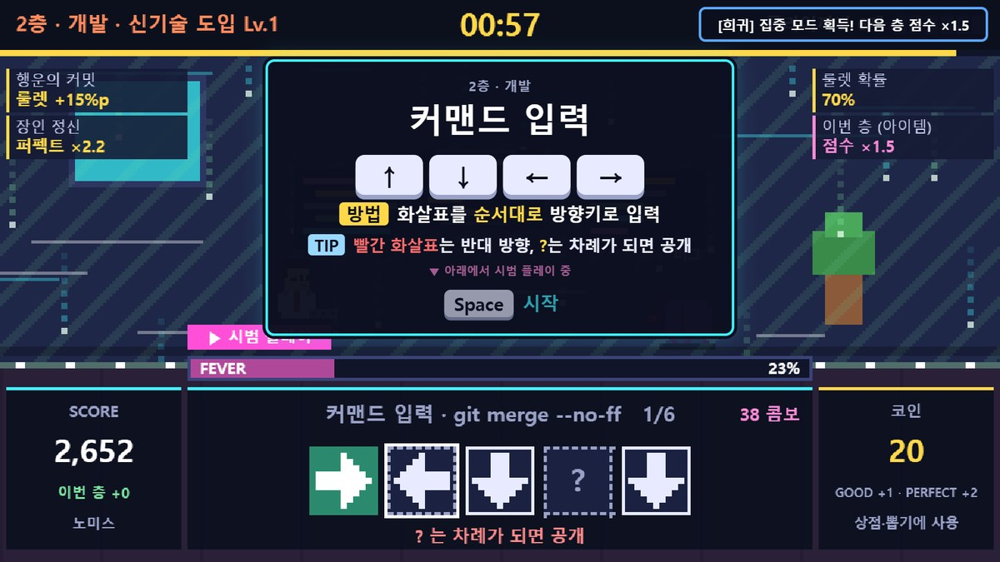
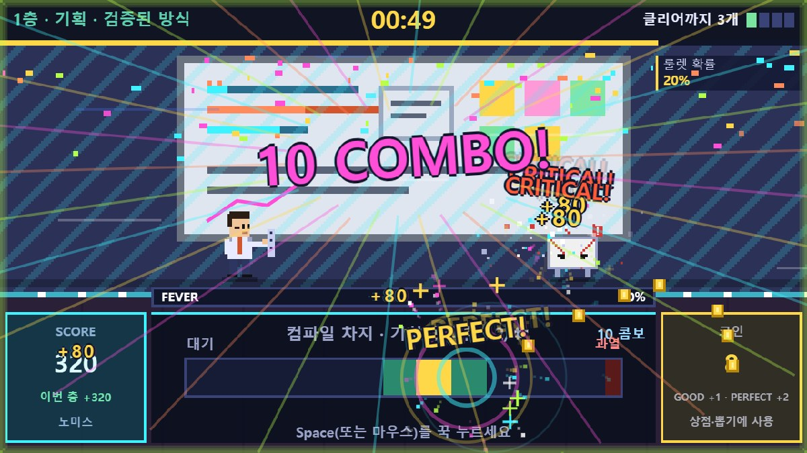
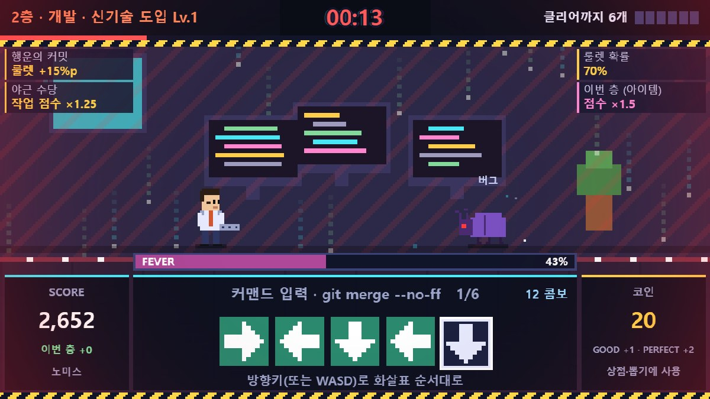
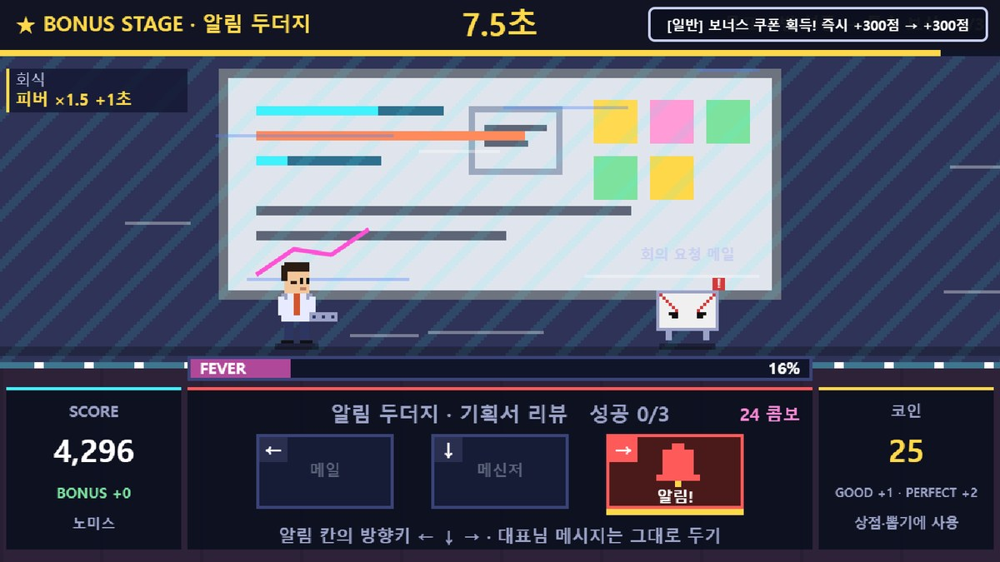

카드 · 루트 선택 · 정산표 · WARNING · 피버 · 그로기 중에는 제한 시간이 멈춥니다. 시간은 미니게임을 하는 동안에만 흐릅니다.






1
2
3
4
5
6
7
8
9
10



| 판정 | 결과 |
|---|---|
| PERFECT 빠르고 정확하게 | 점수 ×1.6 · 코인 +2 |
| GOOD | 점수 · 코인 +1 |
| MISS | 제한 시간 −2초 · 콤보 0 |








| 1 · 검증된 방식 | 2 · 신기술 도입 | |
|---|---|---|
| 난이도 | ×1 | ×2.25 |
| 작업 수 | ×1 | ×1.5 |
| 보스 체력 | 그대로 | ×2 |
| 점수 | ×1 | ×2 |


| 남은 1초당 점수 | 안전만 200 | 신기술 1회 400 | 신기술 2회 480 |
|---|


| 등급 | S · A · B 출시 성공 (점수순) · C 보스까지 도달 · D 그 밖 |
|---|---|
| 칭호 | 유니콘 스타트업 CTO · 출시 장인 · 배포 직전의 개발자 · QA 통과 대기 중 · 열정 넘치는 인턴 |
모두 코드로 합성한 8비트 칩튠(음원 파일 없음) · M 켜기/끄기
출시 컷신 · 일시정지에서는 배경 음악이 멈춥니다. 게임을 연 뒤 첫 키 입력부터 소리가 납니다. 화면은 실제 게임 캡처, 수치는 조정 중인 값입니다.